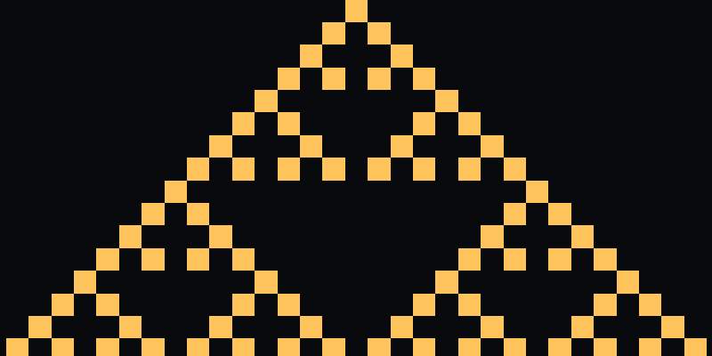
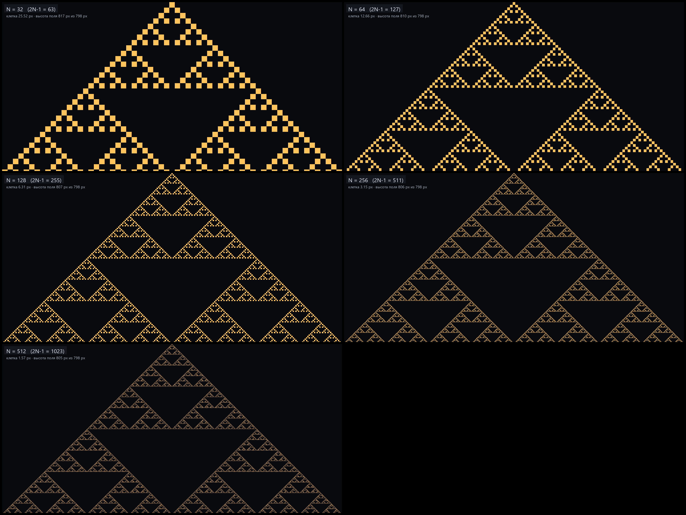
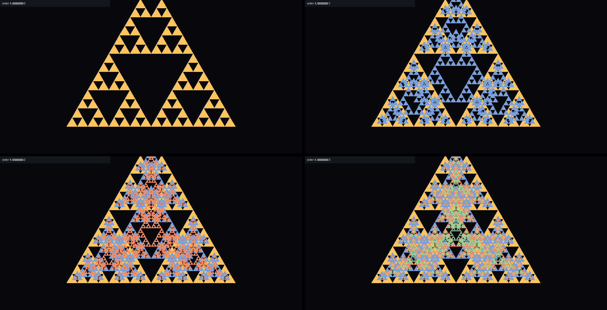
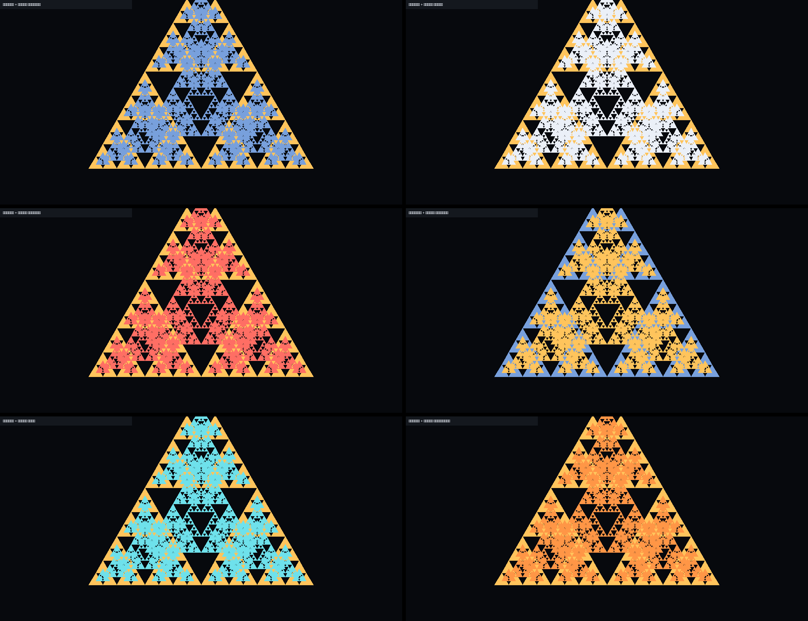
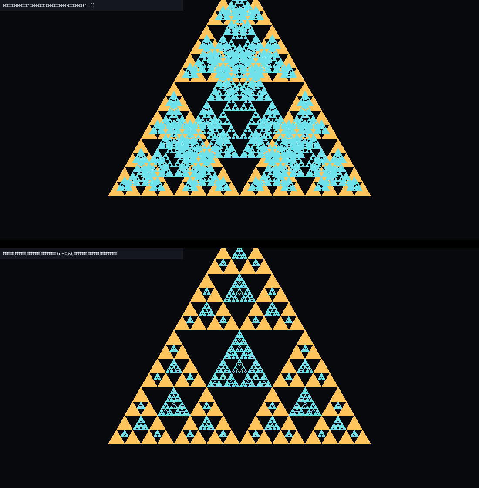
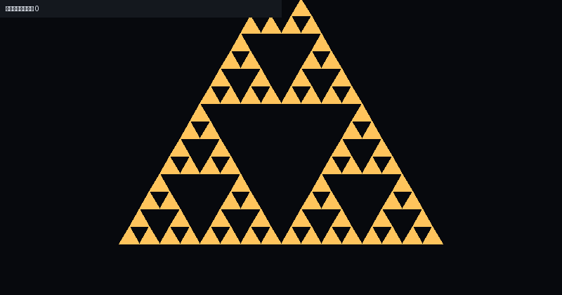
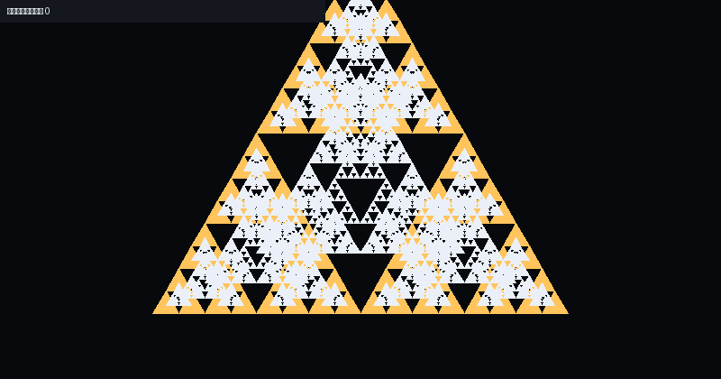

1. Рост без камеры — только биты 1 бит = 1 пиксель, шаг дискретный
Камера не двигается и ничего не масштабируется: кадр 1024×512, один бит — ровно один пиксель. Каждый шаг — следующая октава (N = 32 → 64 → 128 → 256 → 512); биты встают на целые пиксели, без округлений и приблизительных положений. Шаг дискретный: рисунок сразу переставляется, без плавности.
↑ Этот способ — в плеере выше: бегунок, стрелки, «Авто».
Правило 90 от одной вершины: b(2r,2c) = b(2r+1,2c+1) = b(r,c)
(проверено на 512 строках: 32 896 / 32 896). Каждая следующая октава — та же картинка, разложенная
на две подрешётки; биты переставляются в целые пиксели, поэтому рисунок точный, а не «примерный».
Старый опыт с камерой (плавный отъезд) сохранён ниже как запись — в рабочем варианте камеры нет.
| N | 2N−1 | в пикселях | клетка |
|---|---|---|---|
| 32 | 63 | 63×32 | 1 px |
| 64 | 127 | 127×64 | 1 px |
| 128 | 255 | 255×128 | 1 px |
| 256 | 511 | 511×256 | 1 px |
| 512 | 1023 | 1023×512 | 1 px |


Отдельная демо-страница «Рост треугольника» → · Маятник, тестовый треугольник: рост →
1б. Маятник вверх обрезки к центральной оси
Настоящее ядро Маятника: после центрального конуса ход t одновременно пересчитывает пару вершин −t и +t. Чётный и нечётный ходы идут по разным подрешёткам. Это последовательные XOR-конусы, а не правило90 от одной вершины.
Оба боковых обрезка собираются над прежней вершиной: левый сдвигается на A клеток вправо и A строк вверх, правый — на A клеток влево и A строк вверх. Ширина мастера W=2A+1, его высота A+1. Поворота и уменьшения нет; каждый бит остаётся одним физическим пикселем.
Если фрагмент снова выходит за боковую границу, к нему повторяется тот же перенос. На швах совпавшие 0/1 складываются через XOR, фон −1 не участвует. Перенесённые фрагменты не возвращаются в исходную матрицу расчёта.
Верхняя зона находится над исходной вершиной на центральной оси; её координаты показаны под полем. Единицы золотые, внутренние нули чёрные, фон тёмно-синий; счётчики различают все три состояния. Источник расширяется блоками по64хода, плеер продолжает вперёд без сброса на0. Высота поля увеличивается при заполнении следующей верхней полосы. При нехватке памяти воспроизведение останавливается с сообщением.
Колесо прокручивает страницу, камера и экранный зум здесь выключены. Назад и «Сначала» — явный пересчёт ядра, а не автоматический цикл.
1а. Петля по пикселям ступенчатое стягивание к вершине
Отдельный вариант: рисунок стягивается к вершине на центральной оси. Для каждого экранного пикселя выбирается один целый бит продолжающегося правила90; часть исходных битов пропускается. Продолжение приходит с краёв, поэтому конечного треугольника, который нужно сбрасывать с512 до32строк, здесь нет. Это выборка с пропусками, а не сохранение всех исходных битов.
Цикл состоит из256ступеней от выборки1:1 до2:1. При удвоении координат
b(2r,2c)=b(r,c), поэтому фаза256 точно совпадает с фазой0. После неё меняется только
номер фазы. Каждый выходной бит занимает один физический пиксель; сглаживания и растягивания
растра нет. Масштаб страницы учитывается. Колесо над полем прокручивает страницу, масштаб этого
варианта фиксирован. Шаги, пауза и бегунок работают как обычно.
Счётчики этого варианта относятся ко всему физическому растру окна: цветной пиксель —1, чёрный —0. Это счётчики изображения после выборки.
У прежнего «Роста битов» остаются его пять размеров32→64→128→256→512 и возврат к началу: он показывает рост целого конечного треугольника.
2. Копии в чёрных впадинах вложение уменьшенных копий, другой цвет
Чёрная перевёрнутая впадина — та же картинка, повёрнутая на 180°, и по клеткам она равна предыдущей октаве (у 32-строчной картинки самая большая впадина — ~16 строк × 31 колонка, то есть 16-строчная картинка). Вкладываем в каждую впадину уменьшенную копию: мастер — своим цветом, копии — другим. Чёрные треугольники уменьшаются вдвое за уровень, видимых уровней ~9–10; чёрная площадь падает ×1/4 за уровень (1/4 → 1/16 → 1/64 → …), предел — сплошной залитый треугольник. Вложение — это затягивание, а не бесконечный рост.

↑ Этот способ — в плеере выше: бегунок, стрелки, «Авто».




3. Вложение без камеры — только биты копии целыми клетками, шаг дискретный
Камера не двигается и ничего не масштабируется: кадр 63×32 клетки по 14 px, один бит — ровно одна клетка. Перевёрнутая впадина имеет размер ровно предыдущей картинки (16×31 = N=16), поэтому копия вставляется в неё целыми клетками — без масштаба, без округлений. Следующая впадина вдвое меньше, и так до одной клетки. Шаг дискретный: уровень 0 → 4, без плавности.
↑ Этот способ — в плеере выше: бегунок, стрелки, «Авто».
4. Что установлено расчётом чтобы не пересчитывать заново
Самоподобие правила 90 (одна вершина):
b(2r, 2c) = b(r, c) b(2r+1,2c+1) = b(r, c)
Проверка: N=512, все клетки — 32 896 / 32 896 совпадений. Поэтому удвоенный треугольник — старая картинка, разложенная на две подрешётки.
Отсюда пределы:
- рост + вписывание: ~4–5 видимых удвоений, потом новые уровни меньше пикселя;
- вложение копий: ~9–10 уровней (чёрные впадины 790 → 395 → 197… px), предел — сплошной;
- зум в впадину: не сходится, бесшовная петля ×4 (копия без поворота);
- держать масштаб: видно бесконечно, поле уходит за кадр (N=512 — 16 экранов).
Ключевые числа окна 1608×798:
| клетка при N=32 | 25,52 px |
| высота поля при N=32 | 816,8 px |
| высота окна | 798 px |
| срез базы | ≈19 px |
| бит при N=32 / N=512 | 243 / 19 683 |
| клеток при N=1024 | 2 096 128 |
5. Как это встроить в сайт карта мест, ничего пока не менялось
Что уже сделано и где это лежит:
Фон Хаба — сделано (v0.490). В _js/hub-xor-background.js добавлен
четвёртый режим «Рост»: на 2047-м шаге поле удваивается один раз (2048×4095), панели показывают
увеличенное поле вдвое уменьшенным, поэтому старый рисунок остаётся верхней половиной, а масштаб —
прежним. Включение: в меню сравнения кнопка «Цикл» нажимается до «Рост».
- память: поля 6 шт. по 2 МБ (12 МБ) + снимки 6 МБ; рост один раз, дальше вершины идут по кругу увеличенного поля;
- 5.7 конусы: нижняя половина старых конусов не пересчитывается (они обрезаны прежней высотой) — на стыке видно шов; 5.8/5.9 продолжаются правилом;
- статистика и наложение в этом режиме считаются по уменьшенной копии.
Тестовый треугольник Маятника — сделано: отдельная страница
mayatnik/Zerkalius-mayatnik-rost.html
(v0.001) — рост 32→2048 с переключателем «вписывать ↔ держать масштаб», ползунком октавы и темпом.
Рабочая Zerkalius-mayatnik.html не менялась.
«Продолжать» Конусов — mayatnik/mayatnik-cone-continuation.js:
уже держит полные конусы в скрытых крыльях за 2N−1; рост/масштаб ложится сверху на его
seek/metadata.
Что осталось решить:
- нужно ли доделывать рост в 5.7 конусах без шва (пересчёт нижних половин старых конусов);
- что считать чёрным в реальном поле для вложения копий: нули, пустые клетки или чёрный цвет наложения;
- петля: ×2 с переворотом (не бесшовна на прямоугольном кадре) или ×4 без переворота (бесшовна).
6. Ролик для канала рост 32 → 2048 в 4K
Тот же рост с плавным отъездом камеры, но в 4K: при ширине 3840 px клетка при N=1024 — 1,88 px, поэтому видно на два удвоения больше, чем в окне 1608 px (там 0,79 px). 11,2 с, 30 fps; чёрные поля сверху и снизу — у поля 2N−1 × N пропорция 2:1.
Отдельная демо-страница с переключателем: «Рост треугольника» →